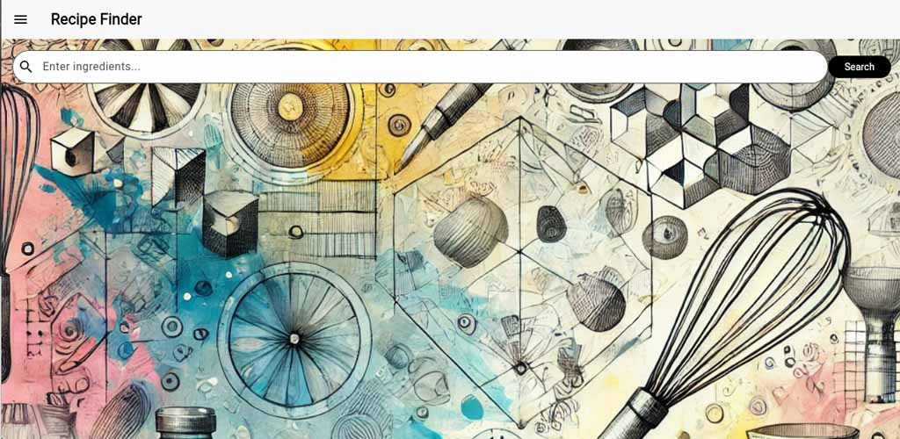

Recipe Gen APP
I worked on an app to test my skills. RecipeGenApp is a Flutter-based mobile and web application that helps users search, explore, and add recipes with ease. Integrated with Firebase for authentication, Firestore for real-time database management, and Firebase Storage for image uploads, the app allows users to discover recipes based on ingredients, view detailed cooking instructions, and contribute their own creations. I also implemented a closed beta testing phase through the Google Play Console and optimized the app for web deployment via Firebase Hosting.
Here is a link to see the coding on GitHub
Please click the link below or see the embedded video for an explanation of the Recipe Gen App. I have completed closed testing, and it is now being reviewed for the playstore